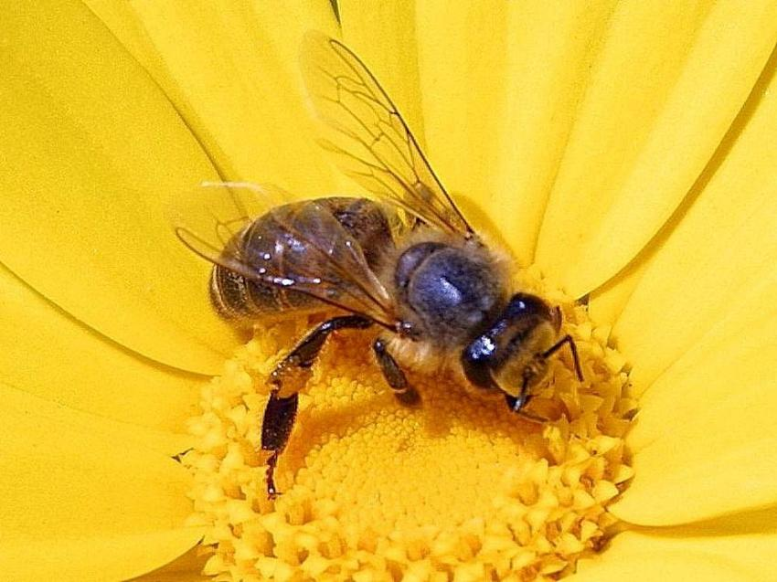

Personal Life
Friends and Family

I was born on in the hive. My father is a worker bee. He is part of the pollination force. He collects nectar so we can make honey. My mother is a servant to the Queen. She brings her honey and helps take care of the Queen's children, 1,500 per day! I'm still best friends with my buddies from grade school. I played beesketball with Beethan up through high school. Mercebees and I go way back, we were in day care together! Beeanna and I are cousins, but we went to school together too. We played in the band together. I played beeano and she played the beecorder.
Relationships
I have a girlfriend, her name is Beeatrice. We met at a flower shop on Main Street. It was love at first flight. I'll never forget the way she bumbled when we first met. She was so black and so yellow. I commissioned a song to be written for her by my friend Wiz Khalifa, you may have heard of it.
Hobbies
I have plenty of hobbies. Some of my favorites are playing the beetar, listening to music on my Beets by Dre© headphones, and taking long walks on the beech. I played beesketball in high school. I was going to go to the Olympics until I got my stinger caught in another player trying to box them out. I was in the hospital for three whole hours. Here is a link to my favorite documentary, The Bee Movie, written by my friend Jerry Seinfeld. It is about the struggles us bees go through on a daily basis.